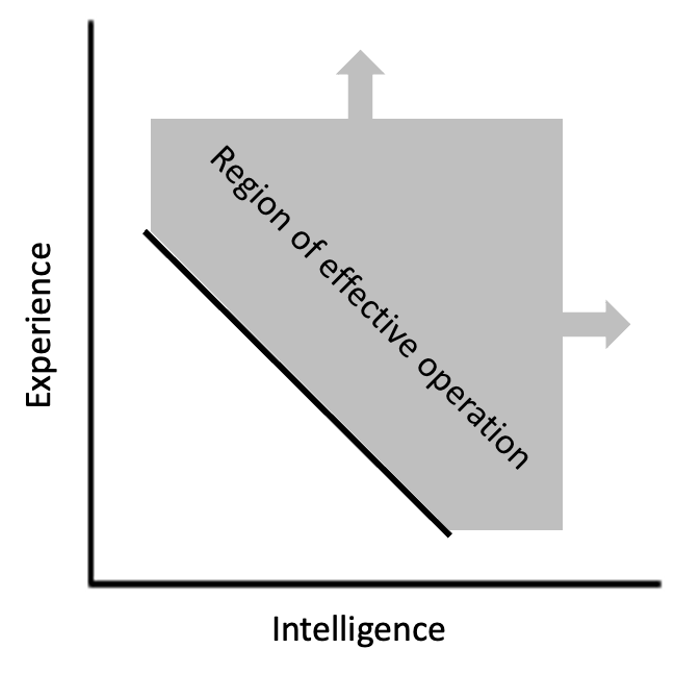

Experience gives the illusion of intelligence.
Imposter syndrome is defined as:
a psychological occurrence in which an individual doubts their skills, talents, or accomplishments and has a persistent internalized fear of being exposed as a fraud. Despite external evidence of their competence, those experiencing this phenomenon do not believe they deserve their success or luck. They may incorrectly attribute it to the Matthew effect, or they may think that they are deceiving others because they feel as if they are not as intelligent as they outwardly portray themselves to be.
I identify with this strongly and attribute it primarily to comparing myself to the people I work with who are crazy smart...or knowledgable? Or experienced? Which one is it?
The senior member in my group has been in the same position for 22 years now, working 60-80 hours per week every week since then. In standard "work years", that's 33-44 years of experience. (There's something to be said about this type of scaling not being 1:1, but that's another topic.) He's been involved in almost every single engineering decision the group has made. He has extensive history built up digitally and mentally. He's practiced the art of analyzing and deciding every day, and for 20 of those years it was under the mentorship of someone he claims is leagues better than him. Say what?!
Further, the beginning years were the first of a kind. All of the equipment was new—not just to the group members, but to the industry as a whole. Couple that with an undeveloped group and a high-demand manufacturing atmosphere that was expecting results last week and the result is an environment that forces learning and adaptation at an incredibly fast pace. Knowledge and experience is shoved down the throat of engineers in heaps, giving them little time to breath, little time to digest. Yet they still did. Information was received and carefully documented. Lessons were learned and implemented. Procedures were written and fanned out.
I forget these facts a lot. I forget that the level of learning during that time was exponentially more than is available to me now. I forget that necessity is the mother of invention. I forget that knowledge begets knowledge, that identifying the correct location of four puzzle pieces with an empty space between them can automatically reveal the missing piece's structure and color. I forget that I only see a small portion of the daily behind-the-scenes going-ons. I forget that he was responsible for creating a majority of the documentation, and in doing so learned the material extremely well.
Experience has a significant impact that most others often fail to give credit, instead attributing it to being smart.
This brings me to my thesis statement: while a minimum level of intelligence is required to operate in certain environments, sheer experience can make up for lack of it. This means that high-experience people who learn something are less intelligent than a low-experience person who learns it in the same time. I view this as a very simple equation:
y = -x + C
which only exists in a portion of the first quadrant. The y-axis is experienced needed, the x-axis is intelligence, C is some constant offset, and the person must be above the line in order to operate effectively. In other words, less intelligence is needed if more one has more experience and more intelligence is needed if one has less experience. The larger the C value, the more intelligence is needed for a given experience level or more experience needed for a given intelligence level.
In the wise words of Kant:
Experience without theory is blind, but theory without experience is mere intellectual play
Vast experience in a topic allows for patterns to be recognized more easily and heuristics to be developed and applied more successfully. Something happening on A.2 that is ever so slightly different than what happened on A.1 a year ago is still a useful clue into the root cause. Combine this recognition with a sharp memory and/or detailed documentation and it's hard to not solve the issue (and solving the issue at all signals intelligence). As A.3, ..., A.X occur, heuristics for finding root cause can be refined and updated, leading to faster or clearer resolution.
Habits matter here. Instinctively applying heuristics at the onset of an issue prevents time from being wasted with fruitless troubleshooting and gets directly to the core issue. The more times applying the heuristic, the more instinctive it becomes, the more intelligent the decision/finding appears.
A few takeaways and overall points after putting these thoughts to paper: